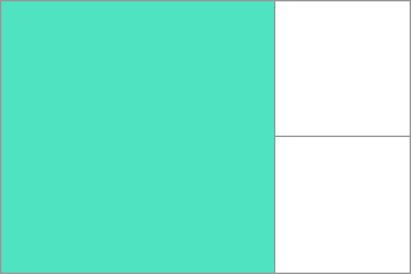

A grid area is one or more {{glossary("grid cell", "grid cells")}} that make up a rectangular area on the grid. Grid areas are created when you place an item using line-based placement or when defining areas using named grid areas.

Grid areas must be rectangular in nature; it is not possible to create, for example, a T- or L-shaped grid area.
In the example below I have a grid container with two grid items. I have named these with the {{cssxref("grid-area")}} property and then laid them out on the grid using {{cssxref("grid-template-areas")}}. This creates two grid areas, one covering four grid cells, the other two.
* {box-sizing: border-box;}
.wrapper {
border: 2px solid #f76707;
border-radius: 5px;
background-color: #fff4e6;
}
.wrapper > div {
border: 2px solid #ffa94d;
border-radius: 5px;
background-color: #ffd8a8;
padding: 1em;
color: #d9480f;
}
.wrapper {
display: grid;
grid-template-columns: repeat(3,1fr);
grid-template-rows: 100px 100px;
grid-template-areas:
"a a b"
"a a b";
}
.item1 {
grid-area: a;
}
.item2 {
grid-area: b;
}
<div class="wrapper"> <div class="item1">Item</div> <div class="item2">Item</div> </div>
{{ EmbedLiveSample('example_1', '300', '280') }}